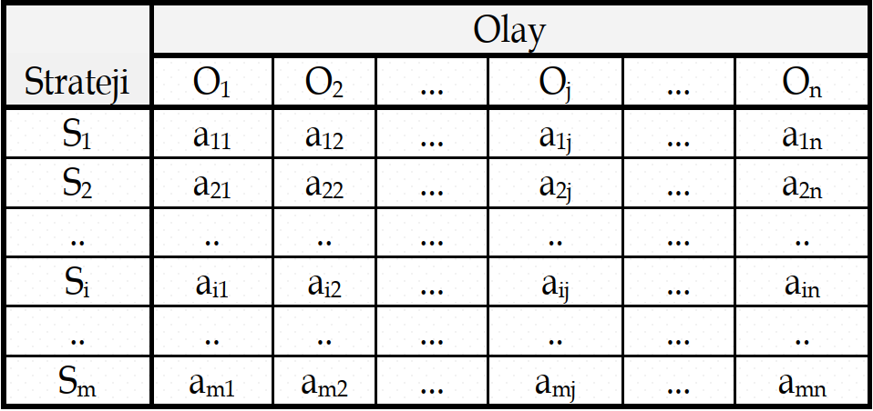

Hafta 10
Karar Kuramı: Belirsizlik Altında Karar Verme
20/11/2025
Karar Matrisi
Karar Matrisi
- Risk veya belirsizlik ortamındaki bir karar probleminin matris biçiminde gösterilmesi, problemin değerlendirilmesi ve çözülmesinde büyük kolaylıklar sağlar.
- Alternatif stratejiler, olası olaylar ve sonuç değerlerinden oluşan matrise karar matrisi denir.
- Karar matrisi kavramı son derece genel olup, bunun yerine sonuç, kazanç, ödeme veya kâr-zarar matrisi deyimleri de kullanılmaktadır.
- Matrisin \(a_{ij}\) elemanları \(R(S_i, O_j)\) sonuç değerleridir.

Belirsizlik durumunda karar alma (1)
Belirsizlik durumunda karar alma (1)
- Belirsizlik durumunda karar vericinin değişik stratejiler arasından seçim yapmasında esas alabileceği belli başlı ölçütler şunlardır:
- Laplace Ölçütü
- Minimaks veya Maksimin Ölçütü (Kötümserlik Ölçütü)
- Maksimaks veya Minimin Ölçütü (İyimserlik Ölçütü)
- Savage (Pişmanlık) Ölçütü
- Hurwicz Ölçütü
Belirsizlik durumunda karar alma (2)
Belirsizlik durumunda karar alma (2)
- Uygun ölçütün seçilmesi karar ortamının yapısına, karar vericinin deneyim ve eğilimine bağlıdır.
- Sözgelimi, minimaks ölçütünü seçen karar verici ile karşılaştırıldığında, Laplace ölçütünü benimseyen karar vericinin daha iyimser olduğu söylenebilir.
- Hurwicz ölçütünü benimseyen karar vericinin ise minimaks ölçütü ile maksimaks ölçütü arasında bir denge bulmaya çalıştığı kabul edilir.
- Kısaca bu ölçütler arasında seçim yapmada genel kabul görmüş bir kural yoktur.
- Yukarıdaki ölçütlerden birini kullanacak olan karar vericinin zeki bir rakibinin bulunmadığı, tek rakibinin doğa olduğu kabul edilir.
Laplace Ölçütü
Laplace Ölçütü
- Laplace ölçütü muhtemel olayların ortaya çıkması ile ilgili olasılıkların birbirlerine eşit olduğu ilkesine dayanır.
- Olayların ortaya çıkması olasılıkları belirlenebildiğinden problem belirsizlik durumunda karar alma problemi olmaktan çıkarak, risk durumunda karar alma problemine dönüşür.
- Laplace ölçütü, olayların gerçekleşmesi olasılıklarının farklı olduğuna ilişkin bir kanıt olmaması durumunda kullanılabilir.
- Anılan olasılıkların eşit kabul edilmesi ilkesine yetersiz sebep ilkesi denir.
Örnek 1: Laplace Ölçütü - Kazanç Durumu (1)
Örnek 1: Laplace Ölçütü - Kazanç Durumu (1)
- Laplace ölçütünü aşağıdaki kazanç matrisine uygulayarak en iyi stratejiyi kararlaştırınız.
| Strateji | Olay | |||
|---|---|---|---|---|
| O1 | O2 | O3 | O4 | |
| S1 | 26 | 26 | 18 | 22 |
| S2 | 22 | 34 | 30 | 18 |
| S3 | 28 | 24 | 34 | 26 |
| S4 | 22 | 30 | 28 | 20 |
Örnek 1: Laplace Ölçütü - Kazanç Durumu (2)
Örnek 1: Laplace Ölçütü - Kazanç Durumu (2)
- Laplace ölçütü tüm olasılıkları eşit olarak kabul ettiğinden her bir olay için olasılık \(0.25\) olduğundan stratejilerin beklenen değerleri aşağıdaki gibi hesaplanır.
- S1 için \(0.25\cdot26 + 0.25\cdot26 + 0.25\cdot18 + 0.25\cdot22 = 23.0\)
- S2 için \(0.25\cdot22 + 0.25\cdot34 + 0.25\cdot30 + 0.25\cdot18 = 26.0\)
- S3 için \(0.25\cdot28 + 0.25\cdot24 + 0.25\cdot34 + 0.25\cdot26 = 28.0\)
- S4 için \(0.25\cdot22 + 0.25\cdot30 + 0.25\cdot28 + 0.25\cdot20 = 25.0\)
- En yüksek beklenen kazancı \(S3\) seçeneği sağladığından \((28.0)\), karar vericinin en iyi kararı \(S3\)’ü seçmek olacaktır.
| Strateji | Olay | Laplace | |||
|---|---|---|---|---|---|
| O1 | O2 | O3 | O4 | ||
| Olasılık | 0.25 | 0.25 | 0.25 | 0.25 | |
| S1 | 26 | 26 | 18 | 22 | 23.00 |
| S2 | 22 | 34 | 30 | 18 | 26.00 |
| S3 | 28 | 24 | 34 | 26 | 28.00 |
| S4 | 22 | 30 | 28 | 20 | 25.00 |
Minimaks veya Maksimin Ölçütü (Kötümserlik Ölçütü)
Minimaks veya Maksimin Ölçütü (Kötümserlik Ölçütü)
- Bu ölçüt yaklaşımlarında tutucu, kötümser karar vericilerin benimsedikleri karar ölçütüdür.
- Bu yaklaşım, hangi strateji seçilmiş olursa olsun daima o eylem için en kötü olan olayın gerçekleşeceği varsayımına dayanır.
- Bu nedenle, her bir strateji için öncelikle o eylem için en kötü olan olayın ortaya çıkması nedeniyle oluşan en kötü sonuç belirlenir.
- Bu yolla bulunan en kötü sonuçlar arasından en iyi olanının işaret ettiği stratejinin seçilmesiyle en iyi hareket tarzı belirlenmiş olur.
- Karar matrisi elemanları;
- Gelir, kâr, kazanç gibi büyük olması arzulanan değerlere karşılık geliyorsa ölçüt en küçüklerin en büyüğü anlamına gelen maksimin;
- Gider, zarar, kayıp gibi küçük olması arzulanan değerlere karşılık geliyorsa en büyüklerin en küçüğü anlamını ifade eden minimaks ölçütü adını alır.
Örnek 1: Kötümserlik Ölçütü - Kazanç Durumu (1)
Örnek 1: Kötümserlik Ölçütü - Kazanç Durumu (1)
- Karamsarlık ölçütünü aşağıdaki kazanç matrisine uygulayarak en iyi stratejiyi kararlaştırınız.
| Strateji | Olay | |||
|---|---|---|---|---|
| O1 | O2 | O3 | O4 | |
| S1 | 26 | 26 | 18 | 22 |
| S2 | 22 | 34 | 30 | 18 |
| S3 | 28 | 24 | 34 | 26 |
| S4 | 22 | 30 | 28 | 20 |
Örnek 1: Kötümserlik Ölçütü - Kazanç Durumu (2)
Örnek 1: Kötümserlik Ölçütü - Kazanç Durumu (2)
Karar verici her bir strateji sonucunda oluşabilecek en kötü senaryoyu düşünecektir.
Bu durumda \(S1\) için beklenen kazanç \(18\), \(S2\) için beklenen kazanç \(18\), \(S3\) için beklenen kazanç \(24\) ve \(S4\) için beklenen kazanç \(20\) olacaktır.
| Strateji | Olay | Maximin | |||
|---|---|---|---|---|---|
| O1 | O2 | O3 | O4 | ||
| S1 | 26 | 26 | 18 | 22 | 18.00 |
| S2 | 22 | 34 | 30 | 18 | 18.00 |
| S3 | 28 | 24 | 34 | 26 | 24.00 |
| S4 | 22 | 30 | 28 | 20 | 20.00 |
Kullanıcı oluşan bu kötümser stratejiler arasından en iyisini yani maksiminini seçecektir.
Bu durumda kullanıcının seçimi \(24\) beklenen getirisiyle \(S3\) stratejisi olacaktır.
Maksimaks veya Minimin Ölçütü (İyimserlik Ölçütü)
Maksimaks veya Minimin Ölçütü (İyimserlik Ölçütü)
- Bu yaklaşım, hangi strateji seçilmiş olursa olsun daima o eylem için en iyi olan olayın gerçekleşeceği varsayımına dayanır.
- Bu nedenle, her bir strateji için öncelikle o eylem için en iyi olan olayın gerçekleşmesi sonucunda oluşan en iyi sonuç belirlenir.
- Bu yolla bulunan en iyi sonuçlar arasından en iyi olanının işaret ettiği stratejinin seçilmesiyle en iyi hareket tarzı belirlenmiş olur.
- Karar matrisi elemanları;
- Gelir, kâr, kazanç gibi büyük olması arzulanan değerlere karşılık geliyorsa ölçüt en büyüklerin en büyüğü anlamına gelen maksimaks;
- Gider, zarar, kayıp gibi küçük olması arzulanan değerlere karşılık geliyorsa en küçüklerin en küçüğü anlamını ifade eden minimin ölçütü adını alır.
Örnek 1: İyimserlik Ölçütü - Kazanç Durumu (1)
Örnek 1: İyimserlik Ölçütü - Kazanç Durumu (1)
- İyimserlik ölçütünü aşağıdaki kazanç matrisine uygulayarak en iyi stratejiyi kararlaştırınız.
| Strateji | Olay | |||
|---|---|---|---|---|
| O1 | O2 | O3 | O4 | |
| S1 | 26 | 26 | 18 | 22 |
| S2 | 22 | 34 | 30 | 18 |
| S3 | 28 | 24 | 34 | 26 |
| S4 | 22 | 30 | 28 | 20 |
Örnek 1: İyimserlik Ölçütü - Kazanç Durumu (2)
Örnek 1: İyimserlik Ölçütü - Kazanç Durumu (2)
Karar verici her bir strateji sonucunda oluşabilecek en iyi senaryoyu düşünecektir.
Bu durumda \(S1\) için beklenen kazanç \(26\), \(S2\) için beklenen kazanç \(34\), \(S3\) için beklenen kazanç \(34\) ve \(S4\) için beklenen kazanç \(30\) olacaktır.
| Strateji | Olay | Maximax | |||
|---|---|---|---|---|---|
| O1 | O2 | O3 | O4 | ||
| S1 | 26 | 26 | 18 | 22 | 26.00 |
| S2 | 22 | 34 | 30 | 18 | 34.00 |
| S3 | 28 | 24 | 34 | 26 | 34.00 |
| S4 | 22 | 30 | 28 | 20 | 30.00 |
Kullanıcı oluşan bu iyimser stratejiler arasından en iyisini yani maksimaksını seçecektir.
Bu durumda kullanıcının seçimi \(32\) beklenen getirisiyle \(S2\) ya da \(S3\) stratejisi olacaktır.
Savage Ölçütü (1)
Savage Ölçütü (1)
- Bu ölçüt en büyük fırsat kaybının en küçüklenmesi esasına dayanır. Bu nedenle minimaks fırsat kaybı ölçütü olarak da bilinir.
- Ölçütün uygulanması için öncelikle fırsat kaybı veya pişmanlık matrisinin oluşturulması gerekir.
- Fırsat kaybı her bir olay için en iyi sonucu sağlayacak stratejinin seçilmemesi sonucu vazgeçilen kazanç veya katlanılan kayıp miktarıdır.
- Fırsat kayıpları genellikle pozitif değerler ve rakamlarla açıklanır.
Savage Ölçütü (2)
Savage Ölçütü (2)
- Karar tablosu gelirler cinsinden ifade edildiğinde, ele alınan her bir olaya ilişkin fırsat kaybı değerleri; en iyi olan eylemin seçilmesi durumunda sağlanacak olan gelirden diğer seçeneklerin sağlayacağı gelirlerin çıkartılmasıyla hesaplanırlar.
Sütun Enbüyük Değeri – Sütun Değerleri
- Karar matrisinin maliyetleri göstermesi durumunda fırsat kaybı değerleri en iyi seçimin maliyet değerinin diğer eylemlerin maliyet rakamlarından çıkartılması ile belirlenirler.
Sütun Değerleri – Sütun En küçük Değeri
Örnek 1: Savage Ölçütü - Kazanç Durumu (1)
Örnek 1: Savage Ölçütü - Kazanç Durumu (1)
- Savage ölçütünü aşağıdaki kazanç matrisine uygulayarak en iyi stratejiyi kararlaştırınız.
| Strateji | Olay | |||
|---|---|---|---|---|
| O1 | O2 | O3 | O4 | |
| S1 | 26 | 26 | 18 | 22 |
| S2 | 22 | 34 | 30 | 18 |
| S3 | 28 | 24 | 34 | 26 |
| S4 | 22 | 30 | 28 | 20 |
Örnek 1: Savage Ölçütü - Kazanç Durumu (2)
Örnek 1: Savage Ölçütü - Kazanç Durumu (2)
Karar verici kazançlar için karar vermek istediğinden her bir sütunun maksimum değerinden o sütundaki diğer değerleri çıkararak pişmanlık matrisini elde eder.
| Strateji | Pişmanlık (Regret) Matrisi | MR (Satır Maks. Pişmanlık) | |||
|---|---|---|---|---|---|
| O1 | O2 | O3 | O4 | ||
| S1 | 2 | 8 | 16 | 4 | 16.00 |
| S2 | 6 | 0 | 4 | 8 | 8.00 |
| S3 | 0 | 10 | 0 | 0 | 10.00 |
| S4 | 6 | 4 | 6 | 6 | 6.00 |
Elde edilen pişmanlık matrisindeki her bir strateji için en çok pişmanlık yaratacak değeri belirler.
Bu durumda \(S1\) için beklenen pişmanlık \(16\), \(S2\) için beklenen pişmanlık \(8\), \(S3\) için beklenen pişmanlık \(10\) ve \(S4\) için beklenen pişmanlık \(6\) olacaktır.
Kullanıcı oluşan bu yüksek pişmanlıklı stratejiler arasından en az pişmanlık getirecek stratejiyi yani minimaksını seçecektir.
Bu durumda kullanıcının seçimi \(6\) beklenen pişmanlık değeriyle \(S4\) stratejisi olacaktır.
Hurwicz Ölçütü (1)
Hurwicz Ölçütü (1)
- Hurwicz’e göre, karar vericinin ne aşırı derecede iyimser, ne de aşırı derecede kötümser olmasını gerektiren güçlü gerekçeleri yoktur.
- Bu nedenle, karar vericinin maksimin ölçütünün aşırı kötümserliği ile maksimaks ölçütünün aşırı iyimserliği arasında bir denge kurması uygun olur.
- Bu nedenle bu ölçüte ağırlıklı ortalama veya gerçekçilik ölçütü de denir.
- Hurwicz ölçütü, seçilen her strateji için iyimserlik koşullarında ortaya çıkan sonuçlar ile kötümserlik koşullarında ortaya çıkan sonuçların ağırlıklandırılması esasına dayanır.
- Bunun için iyimserlik katsayısı olarak bilinen \(\alpha\) kullanılır.
Hurwicz Ölçütü (2)
Hurwicz Ölçütü (2)
- \(\alpha\), \(0 \leq \alpha \leq 1\) aralığında bir değerdir.
- Çok kötümser bir karar vericinin \(\alpha\) için seçeceği değer \(0\), aşırı derecede iyimser bir karar vericinin seçeceği değer \(1\) olur.
- Karar verici \(\alpha\)’nın değeri hakkında kararsızsa, \(\alpha=0.5\) seçmesi akılcı olur.
- \(\alpha\)’nın belirlenmesinden sonra karar matrisindeki her bir strateji için en iyi ve en kötü sonuç değerlerinin sırasıyla \(\alpha\) ve \(1-\alpha\) ile çarpılarak sonuçların toplanması gerekir.
- Toplama işlemiyle belirlenen değerler stratejilerin beklenen değerleri olarak yorumlanır ve beklenen değerler taranarak; karar matrisi
- kazanç değerlerinden oluşmuşsa en büyük,
- maliyet değerlerinden oluşmuşsa en küçük beklenen değere sahip stratejinin uygulanması önerilir.
Örnek 1: Hurwicz Ölçütü - Kazanç Durumu (1)
Örnek 1: Hurwicz Ölçütü - Kazanç Durumu (1)
- Hurwicz ölçütünü aşağıdaki kazanç matrisine sırasıyla \(\alpha=0\), \(\alpha=1\) ve \(\alpha=0.6\) için uygulayarak her bir senaryo için en iyi stratejiyi kararlaştırınız.
| Strateji | Olay | |||
|---|---|---|---|---|
| O1 | O2 | O3 | O4 | |
| S1 | 26 | 26 | 18 | 22 |
| S2 | 22 | 34 | 30 | 18 |
| S3 | 28 | 24 | 34 | 26 |
| S4 | 22 | 30 | 28 | 20 |
Örnek 1: Hurwicz Ölçütü - Kazanç Durumu (2)
Örnek 1: Hurwicz Ölçütü - Kazanç Durumu (2)
- \(\alpha\) iyimserlik ölçütü için katsayı olduğundan
- \(\alpha=0\) için tamamen kötümser bir senaryo oluşacak ve hesaplama kötümserlik (maksimin) stratejisiyle aynı olacaktır.
- \(\alpha=1\) için ise tamamen iyimser bir senaryo oluşacak ve hesaplama iyimserlik (maksimaks) stratejisiyle aynı olacaktır.
| Strateji | Olay | Maximin | |||
|---|---|---|---|---|---|
| O1 | O2 | O3 | O4 | ||
| S1 | 26 | 26 | 18 | 22 | 18.00 |
| S2 | 22 | 34 | 30 | 18 | 18.00 |
| S3 | 28 | 24 | 34 | 26 | 24.00 |
| S4 | 22 | 30 | 28 | 20 | 20.00 |
| Strateji | Olay | Maximax | |||
|---|---|---|---|---|---|
| O1 | O2 | O3 | O4 | ||
| S1 | 26 | 26 | 18 | 22 | 26.00 |
| S2 | 22 | 34 | 30 | 18 | 34.00 |
| S3 | 28 | 24 | 34 | 26 | 34.00 |
| S4 | 22 | 30 | 28 | 20 | 30.00 |
- \(\alpha=0\) için kullanıcının seçimi kötümserlik stratejisiyle hesaplanan \(24\) beklenen getirisiyle \(S3\) stratejisi olacaktır.
- \(\alpha=1\) için kullanıcının seçimi iyimserlik stratejisiyle hesaplanan \(34\) beklenen getirisiyle \(S2\) ya da \(S3\) stratejisi olacaktır.
Örnek 1: Hurwicz Ölçütü - Kazanç Durumu (3)
Örnek 1: Hurwicz Ölçütü - Kazanç Durumu (3)
\(\alpha=0.6\) seçildiğinde ise iyimser ve kötümser senaryoların ağırlıklı bir ortalaması hesaplanmalıdır.
Bu hesap her bir strateji için iyimser sonucun \(0.6\) ve kötümser sonucun \(0.4\) ile çarpılıp toplanmasıyla bulunur.
Elde edilen sonuçlardan kazancı maksimum yapacak değer seçilir.
- S1 için \(0.6\cdot26 + 0.4\cdot18 = 22.8\)
- S2 için \(0.6\cdot34 + 0.4\cdot18 = 27.6\)
- S3 için \(0.6\cdot34 + 0.4\cdot24 = 30.0\)
- S4 için \(0.6\cdot30 + 0.4\cdot20 = 26.0\)
Elde edilen sonuçlara bakıldığında en yüksek getiriye sahip \((30)\) \(S3\) stratejisi seçilir.
| Strateji | Olay | En İyi | En Kötü | Hurwicz (α=0.60) | |||
|---|---|---|---|---|---|---|---|
| O1 | O2 | O3 | O4 | ||||
| S1 | 26 | 26 | 18 | 22 | 26.00 | 18.00 | 22.80 |
| S2 | 22 | 34 | 30 | 18 | 34.00 | 18.00 | 27.60 |
| S3 | 28 | 24 | 34 | 26 | 34.00 | 24.00 | 30.00 |
| S4 | 22 | 30 | 28 | 20 | 30.00 | 20.00 | 26.00 |
Örnek 1: Kayıp Durumu
Örnek 1: Kayıp Durumu
- Bu kez strateji ve olay matrisinin olası kayıpları gösterdiği varsayımı altında en iyi stratejiyi
- Laplace Ölçütü
- Kötümserlik Ölçütü
- İyimserlik Ölçütü
- Savage Pişmanlık Ölçütü ve
- \(\alpha=0.3\) alarak Hurwicz Ölçütü
için belirleyin.
| Strateji | Olay | |||
|---|---|---|---|---|
| O1 | O2 | O3 | O4 | |
| S1 | 26 | 26 | 18 | 22 |
| S2 | 22 | 34 | 30 | 18 |
| S3 | 28 | 24 | 34 | 26 |
| S4 | 22 | 30 | 28 | 20 |
Örnek 1: Laplace Ölçütü - Kayıp Durumu
Örnek 1: Laplace Ölçütü - Kayıp Durumu
- Laplace ölçütü tüm olasılıkları eşit olarak kabul ettiğinden her bir olay için olasılık \(0.25\) olduğundan stratejilerin beklenen değerleri aşağıdaki gibi hesaplanır.
- S1 için \(0.25\cdot26 + 0.25\cdot26 + 0.25\cdot18 + 0.25\cdot22 = 23.0\)
- S2 için \(0.25\cdot22 + 0.25\cdot34 + 0.25\cdot30 + 0.25\cdot18 = 26.0\)
- S3 için \(0.25\cdot28 + 0.25\cdot24 + 0.25\cdot34 + 0.25\cdot26 = 28.0\)
- S4 için \(0.25\cdot22 + 0.25\cdot30 + 0.25\cdot28 + 0.25\cdot20 = 25.0\)
- En düşük beklenen kayıp \(S1\) seçeneği sağladığından \((23.0)\), karar vericinin en iyi kararı \(S1\)’i seçmek olacaktır.
| Strateji | Olay | Laplace | |||
|---|---|---|---|---|---|
| O1 | O2 | O3 | O4 | ||
| Olasılık | 0.25 | 0.25 | 0.25 | 0.25 | |
| S1 | 26 | 26 | 18 | 22 | 23.00 |
| S2 | 22 | 34 | 30 | 18 | 26.00 |
| S3 | 28 | 24 | 34 | 26 | 28.00 |
| S4 | 22 | 30 | 28 | 20 | 25.00 |
Örnek 1: Kötümserlik Ölçütü - Kayıp Durumu
Örnek 1: Kötümserlik Ölçütü - Kayıp Durumu
Karar verici her bir strateji sonucunda oluşabilecek en kötü senaryoyu düşünecektir.
Bu durumda \(S1\) için beklenen kayıp \(26\), \(S2\) için beklenen kayıp \(34\), \(S3\) için beklenen kayıp \(34\) ve \(S4\) için beklenen kayıp \(30\) olacaktır.
| Strateji | Olay | Minimax | |||
|---|---|---|---|---|---|
| O1 | O2 | O3 | O4 | ||
| S1 | 26 | 26 | 18 | 22 | 26.00 |
| S2 | 22 | 34 | 30 | 18 | 34.00 |
| S3 | 28 | 24 | 34 | 26 | 34.00 |
| S4 | 22 | 30 | 28 | 20 | 30.00 |
Kullanıcı oluşan bu kötümser stratejiler arasından en iyisini yani minimaksı seçecektir.
Bu durumda kullanıcının seçimi \(26\) beklenen kayıpla \(S1\) stratejisi olacaktır.
Örnek 1: İyimserlik Ölçütü - Kayıp Durumu
Örnek 1: İyimserlik Ölçütü - Kayıp Durumu
Karar verici her bir strateji sonucunda oluşabilecek en iyi senaryoyu düşünecektir.
Bu durumda \(S1\) için beklenen kayıp \(18\), \(S2\) için beklenen kayıp \(18\), \(S3\) için beklenen kayıp \(24\) ve \(S4\) için beklenen kayıp \(20\) olacaktır.
| Strateji | Olay | Minimin | |||
|---|---|---|---|---|---|
| O1 | O2 | O3 | O4 | ||
| S1 | 26 | 26 | 18 | 22 | 18.00 |
| S2 | 22 | 34 | 30 | 18 | 18.00 |
| S3 | 28 | 24 | 34 | 26 | 24.00 |
| S4 | 22 | 30 | 28 | 20 | 20.00 |
Kullanıcı oluşan bu iyimser stratejiler arasından en iyisini yani minimini seçecektir.
Bu durumda kullanıcının seçimi \(18\) beklenen kaybıyla \(S1\) ya da \(S2\) stratejisi olacaktır.
Örnek 1: Savage Ölçütü - Kayıp Durumu
Örnek 1: Savage Ölçütü - Kayıp Durumu
Karar verici kayıplar için karar vermek istediğinden her bir sütun değerinden o sütunun en küçük değerini çıkararak pişmanlık matrisini elde eder.
| Strateji | Pişmanlık (Regret) Matrisi | MR (Satır Maks. Pişmanlık) | |||
|---|---|---|---|---|---|
| O1 | O2 | O3 | O4 | ||
| S1 | 4 | 2 | 0 | 4 | 4.00 |
| S2 | 0 | 10 | 12 | 0 | 12.00 |
| S3 | 6 | 0 | 16 | 8 | 16.00 |
| S4 | 0 | 6 | 10 | 2 | 10.00 |
Elde edilen pişmanlık matrisindeki her bir strateji için en çok pişmanlık yaratacak değeri belirler.
Bu durumda \(S1\) için beklenen pişmanlık \(4\), \(S2\) için beklenen pişmanlık \(12\), \(S3\) için beklenen pişmanlık \(16\) ve \(S4\) için beklenen pişmanlık \(10\) olacaktır.
Kullanıcı oluşan bu yüksek pişmanlıklı stratejiler arasından en az pişmanlık getirecek stratejiyi yani minimaksını seçecektir.
Bu durumda kullanıcının seçimi \(4\) beklenen pişmanlık değeriyle \(S1\) stratejisi olacaktır.
Örnek 1: Hurwicz Ölçütü - Kayıp Durumu
Örnek 1: Hurwicz Ölçütü - Kayıp Durumu
\(\alpha=0.3\) seçildiği için iyimser ve kötümser senaryoların ağırlıklı bir ortalaması hesaplanmalıdır.
Bu hesap her bir strateji için iyimser sonucun \(0.3\) ve kötümser sonucun \(0.7\) ile çarpılıp toplanmasıyla bulunur.
Elde edilen sonuçlardan kaybı minimum yapacak değer seçilir.
- S1 için \(0.3\cdot18 + 0.7\cdot26 = 23.6\)
- S2 için \(0.3\cdot18 + 0.7\cdot34 = 29.2\)
- S3 için \(0.3\cdot24 + 0.7\cdot34 = 31.0\)
- S4 için \(0.3\cdot20 + 0.7\cdot30 = 27.0\)
Elde edilen sonuçlara bakıldığında en düşük kayba sahip \((23.60)\) \(S1\) stratejisi seçilir.
| Strateji | Olay | En İyi | En Kötü | Hurwicz (α=0.30) | |||
|---|---|---|---|---|---|---|---|
| O1 | O2 | O3 | O4 | ||||
| S1 | 26 | 26 | 18 | 22 | 18.00 | 26.00 | 23.60 |
| S2 | 22 | 34 | 30 | 18 | 18.00 | 34.00 | 29.20 |
| S3 | 28 | 24 | 34 | 26 | 24.00 | 34.00 | 31.00 |
| S4 | 22 | 30 | 28 | 20 | 20.00 | 30.00 | 27.00 |
Örnek 2: Mağaza
Örnek 2: Mağaza
- Bir mağaza sahibinin; \(100\), \(200\) veya \(300\) adet sipariş vermek gibi sırasıyla \(S1\), \(S2\) ve \(S3\) olarak adlandırılan üç stratejisi vardır.
- Mağaza sahibi istem miktarlarının ise sırasıyla \(M1\), \(M2\), \(M3\) ve \(M4\) olarak nitelenen \(100\), \(150\), \(200\) ve ya \(250\) adetten bir tanesi olacağını bilmektedir.
- Karar matrisinin elemanları farklı sipariş ve istem miktarı birleşimlerinin sonucu elde edilecek kâr olarak tanımlanmıştır.
| Sipariş | İstem Miktarı | |||
|---|---|---|---|---|
| M1 (100) | M2 (150) | M3 (200) | M4 (250) | |
| S1 (100) | 3 000 | 2 750 | 2 500 | 2 250 |
| S2 (200) | 1 500 | 4 750 | 8 000 | 7 750 |
| S3 (300) | 2 000 | 5 250 | 8 500 | 11 750 |
Mağaza sahibinin en iyi stratejisini ve bu stratejiye ait değerini Laplace, Kötümserlik, İyimserlik, Pişmanlık ve Hurwitz yöntemleriyle matris elemanları
- olası kazancı gösterdiği durumda \((\alpha=0.5)\)
- olası kaybı gösterdiği durum için \((\alpha=0.2)\) belirleyiniz.
Örnek 2: Mağaza - Laplace Ölçütü - Kazanç Durumu
Örnek 2: Mağaza - Laplace Ölçütü - Kazanç Durumu
- Laplace ölçütü tüm olasılıkları eşit olarak kabul ettiğinden her bir olay için olasılık \(0.25\) olduğundan stratejilerin beklenen değerleri aşağıdaki gibi hesaplanır.
- S1 - 100 sipariş için \(0.25\cdot 3000 + 0.25\cdot 2750 + 0.25\cdot 2500 + 0.25\cdot 2250 = 2625\)
- S2 - 200 sipariş için \(0.25\cdot 1500 + 0.25\cdot 4750 + 0.25\cdot 8000 + 0.25\cdot 7750 = 5500\)
- S3 - 300 sipariş için \(0.25\cdot 2000 + 0.25\cdot 5250 + 0.25\cdot 8500 + 0.25\cdot 11750 = 6875\)
- En yüksek beklenen kazancı S3 - \(300\) sipariş seçeneği sağladığından \((6875)\), karar vericinin en iyi kararı \(300\) siparişi seçmek olacaktır.
| Sipariş | İstem Miktarı | Laplace | |||
|---|---|---|---|---|---|
| M1 (100) | M2 (150) | M3 (200) | M4 (250) | ||
| Olasılık | 0.25 | 0.25 | 0.25 | 0.25 | |
| S1 (100) | 3 000 | 2 750 | 2 500 | 2 250 | 2 625 |
| S2 (200) | 1 500 | 4 750 | 8 000 | 7 750 | 5 500 |
| S3 (300) | 2 000 | 5 250 | 8 500 | 11 750 | 6 875 |
Örnek 2: Mağaza - Kötümserlik Ölçütü - Kazanç Durumu
Örnek 2: Mağaza - Kötümserlik Ölçütü - Kazanç Durumu
Karar verici her bir strateji sonucunda oluşabilecek en kötü senaryoyu düşünecektir.
Bu durumda S1 - 100 sipariş için beklenen kazanç \(2250\), S2 - 200 sipariş için beklenen kazanç \(1500\) ve S3 - 300 sipariş için beklenen kazanç \(2000\) olacaktır.
| Sipariş | İstem Miktarı | Maximin | |||
|---|---|---|---|---|---|
| M1 (100) | M2 (150) | M3 (200) | M4 (250) | ||
| S1 (100) | 3 000 | 2 750 | 2 500 | 2 250 | 2 250 |
| S2 (200) | 1 500 | 4 750 | 8 000 | 7 750 | 1 500 |
| S3 (300) | 2 000 | 5 250 | 8 500 | 11 750 | 2 000 |
Kullanıcı oluşan bu kötümser stratejiler arasından en iyisini yani maksiminini seçecektir.
Bu durumda kullanıcının seçimi \(2250\) beklenen getirisiyle S1 - \(100\) sipariş stratejisi olacaktır.
Örnek 2: Mağaza - İyimserlik Ölçütü - Kazanç Durumu
Örnek 2: Mağaza - İyimserlik Ölçütü - Kazanç Durumu
Karar verici her bir strateji sonucunda oluşabilecek en iyi senaryoyu düşünecektir.
Bu durumda S1 - 100 sipariş için beklenen kazanç \(3000\), S2 - 200 sipariş için beklenen kazanç \(8000\) ve S3 - 300 sipariş için beklenen kazanç \(11750\) olacaktır.
| Sipariş | İstem Miktarı | Maximax | |||
|---|---|---|---|---|---|
| M1 (100) | M2 (150) | M3 (200) | M4 (250) | ||
| S1 (100) | 3 000 | 2 750 | 2 500 | 2 250 | 3 000 |
| S2 (200) | 1 500 | 4 750 | 8 000 | 7 750 | 8 000 |
| S3 (300) | 2 000 | 5 250 | 8 500 | 11 750 | 11 750 |
Kullanıcı oluşan bu iyimser stratejiler arasından en iyisini yani maksimaksını seçecektir.
Bu durumda kullanıcının seçimi \(11750\) beklenen getirisiyle S3 - \(300\) sipariş stratejisi olacaktır.
Örnek 2: Mağaza - Savage Ölçütü - Kazanç Durumu
Örnek 2: Mağaza - Savage Ölçütü - Kazanç Durumu
Karar verici kazançlar için karar vermek istediğinden her bir sütunun maksimum değerinden o sütundaki diğer değerleri çıkararak pişmanlık matrisini elde eder.
| Sipariş | Pişmanlık (Regret) Matrisi | MR (Satır Maks. Pişmanlık) | |||
|---|---|---|---|---|---|
| M1 (100) | M2 (150) | M3 (200) | M4 (250) | ||
| S1 (100) | 0 | 2 500 | 6 000 | 9 500 | 9 500 |
| S2 (200) | 1 500 | 500 | 500 | 4 000 | 4 000 |
| S3 (300) | 1 000 | 0 | 0 | 0 | 1 000 |
Elde edilen pişmanlık matrisindeki her bir strateji için en çok pişmanlık yaratacak değeri belirler.
Bu durumda S1 - 100 sipariş için beklenen pişmanlık \(9500\), S2 - 200 sipariş için beklenen pişmanlık \(4000\) ve S3 - 300 sipariş için beklenen pişmanlık \(1000\) olacaktır.
Kullanıcı oluşan bu yüksek pişmanlıklı stratejiler arasından en az pişmanlık getirecek stratejiyi yani minimaksını seçecektir.
Bu durumda kullanıcının seçimi \(1000\) beklenen pişmanlık değeriyle S3 - 300 sipariş stratejisi olacaktır.
Örnek 2: Mağaza - Hurwicz Ölçütü - Kazanç Durumu
Örnek 2: Mağaza - Hurwicz Ölçütü - Kazanç Durumu
\(\alpha=0.5\) seçildiğinde ise iyimser ve kötümser senaryoların ağırlıklı bir ortalaması hesaplanmalıdır.
Bu hesap her bir strateji için iyimser sonucun \(0.5\) ve kötümser sonucun \(0.5\) ile çarpılıp toplanmasıyla bulunur.
Elde edilen sonuçlardan kazancı maksimum yapacak değer seçilir.
- S1 - 100 sipariş için \(0.5\cdot 3000 + 0.5\cdot 2250 = 2625\)
- S2 - 200 sipariş için \(0.5\cdot 8000 + 0.5\cdot 1500 = 4750\)
- S3 - 300 sipariş için \(0.5\cdot 11750 + 0.5\cdot 2000 = 6875\)
Elde edilen sonuçlara bakıldığında en yüksek getiriye sahip \((6875)\) S3 - \(300\) sipariş stratejisi seçilir.
| Sipariş | İstem Miktarı | En İyi | En Kötü | Hurwicz (α=0.50) | |||
|---|---|---|---|---|---|---|---|
| M1 (100) | M2 (150) | M3 (200) | M4 (250) | ||||
| S1 (100) | 3 000 | 2 750 | 2 500 | 2 250 | 3 000 | 2 250 | 2 625 |
| S2 (200) | 1 500 | 4 750 | 8 000 | 7 750 | 8 000 | 1 500 | 4 750 |
| S3 (300) | 2 000 | 5 250 | 8 500 | 11 750 | 11 750 | 2 000 | 6 875 |
Örnek 2: Mağaza - Laplace Ölçütü - Kayıp Durumu
Örnek 2: Mağaza - Laplace Ölçütü - Kayıp Durumu
- Laplace ölçütü tüm olasılıkları eşit olarak kabul ettiğinden her bir olay için olasılık \(0.25\) olduğundan stratejilerin beklenen değerleri aşağıdaki gibi hesaplanır.
- S1 - 100 sipariş için \(0.25\cdot 3000 + 0.25\cdot 2750 + 0.25\cdot 2500 + 0.25\cdot 2250 = 2625\)
- S2 - 200 sipariş için \(0.25\cdot 1500 + 0.25\cdot 4750 + 0.25\cdot 8000 + 0.25\cdot 7750 = 5500\)
- S3 - 300 sipariş için \(0.25\cdot 2000 + 0.25\cdot 5250 + 0.25\cdot 8500 + 0.25\cdot 11750 = 6875\)
- En düşük beklenen kayıp \(100\) sipariş seçeneği sağladığından \((2625)\), karar vericinin en iyi kararı S1 - \(100\) sipariş’i seçmek olacaktır.
| Sipariş | İstem Miktarı | Laplace | |||
|---|---|---|---|---|---|
| M1 (100) | M2 (150) | M3 (200) | M4 (250) | ||
| Olasılık | 0.25 | 0.25 | 0.25 | 0.25 | |
| S1 (100) | 3 000 | 2 750 | 2 500 | 2 250 | 2 625 |
| S2 (200) | 1 500 | 4 750 | 8 000 | 7 750 | 5 500 |
| S3 (300) | 2 000 | 5 250 | 8 500 | 11 750 | 6 875 |
Örnek 2: Mağaza - Kötümserlik Ölçütü - Kayıp Durumu
Örnek 2: Mağaza - Kötümserlik Ölçütü - Kayıp Durumu
Karar verici her bir strateji sonucunda oluşabilecek en kötü senaryoyu düşünecektir.
Bu durumda S1 - 100 sipariş için beklenen kayıp \(3000\), S2 - 200 sipariş için beklenen kayıp \(8000\) ve S3 - 300 sipariş için beklenen kayıp \(11750\) olacaktır.
| Sipariş | İstem Miktarı | Minimax | |||
|---|---|---|---|---|---|
| M1 (100) | M2 (150) | M3 (200) | M4 (250) | ||
| S1 (100) | 3 000 | 2 750 | 2 500 | 2 250 | 3 000 |
| S2 (200) | 1 500 | 4 750 | 8 000 | 7 750 | 8 000 |
| S3 (300) | 2 000 | 5 250 | 8 500 | 11 750 | 11 750 |
Kullanıcı oluşan bu kötümser stratejiler arasından en iyisini yani minimaksı seçecektir.
Bu durumda kullanıcının seçimi \(3000\) beklenen kayıpla S1 - \(100\) sipariş stratejisi olacaktır.
Örnek 2: Mağaza - İyimserlik Ölçütü - Kayıp Durumu
Örnek 2: Mağaza - İyimserlik Ölçütü - Kayıp Durumu
Karar verici her bir strateji sonucunda oluşabilecek en iyi senaryoyu düşünecektir.
Bu durumda S1 - 100 sipariş için beklenen kayıp \(2250\), S2 - 200 sipariş için beklenen kayıp \(1500\) ve S3 - 300 sipariş için beklenen kayıp \(2000\) olacaktır.
| Sipariş | İstem Miktarı | Minimin | |||
|---|---|---|---|---|---|
| M1 (100) | M2 (150) | M3 (200) | M4 (250) | ||
| S1 (100) | 3 000 | 2 750 | 2 500 | 2 250 | 2 250 |
| S2 (200) | 1 500 | 4 750 | 8 000 | 7 750 | 1 500 |
| S3 (300) | 2 000 | 5 250 | 8 500 | 11 750 | 2 000 |
Kullanıcı oluşan bu iyimser stratejiler arasından en iyisini yani minimini seçecektir.
Bu durumda kullanıcının seçimi \(1500\) beklenen kaybıyla S2 - \(200\) sipariş stratejisi olacaktır.
Örnek 2: Mağaza - Savage Ölçütü - Kayıp Durumu
Örnek 2: Mağaza - Savage Ölçütü - Kayıp Durumu
Karar verici kayıplar için karar vermek istediğinden her bir sütun değerinden o sütunun en küçük değerini çıkararak pişmanlık matrisini elde eder.
| Sipariş | Pişmanlık (Regret) Matrisi | MR (Satır Maks. Pişmanlık) | |||
|---|---|---|---|---|---|
| M1 (100) | M2 (150) | M3 (200) | M4 (250) | ||
| S1 (100) | 1 500 | 0 | 0 | 0 | 1 500 |
| S2 (200) | 0 | 2 000 | 5 500 | 5 500 | 5 500 |
| S3 (300) | 500 | 2 500 | 6 000 | 9 500 | 9 500 |
Elde edilen pişmanlık matrisindeki her bir strateji için en çok pişmanlık yaratacak değeri belirler.
Bu durumda S1 - 100 sipariş için beklenen pişmanlık \(1500\), S2 - 200 sipariş için beklenen pişmanlık \(5500\) ve S3 - 300 sipariş için beklenen pişmanlık \(9500\) olacaktır.
Kullanıcı oluşan bu yüksek pişmanlıklı stratejiler arasından en az pişmanlık getirecek stratejiyi yani minimaksını seçecektir.
Bu durumda kullanıcının seçimi \(1500\) beklenen pişmanlık değeriyle S1 - \(100\) sipariş stratejisi olacaktır.
Örnek 2: Mağaza - Hurwicz Ölçütü - Kayıp Durumu
Örnek 2: Mağaza - Hurwicz Ölçütü - Kayıp Durumu
\(\alpha=0.2\) seçildiği için iyimser ve kötümser senaryoların ağırlıklı bir ortalaması hesaplanmalıdır.
Bu hesap her bir strateji için iyimser sonucun \(0.3\) ve kötümser sonucun \(0.7\) ile çarpılıp toplanmasıyla bulunur.
Elde edilen sonuçlardan kaybı minimum yapacak değer seçilir.
- S1 - 100 sipariş için \(0.2\cdot 2250 + 0.8\cdot 3000 = 2850\)
- S2 - 200 sipariş için \(0.2\cdot 1500 + 0.8\cdot 8000 = 6700\)
- S3 - 300 sipariş için \(0.2\cdot 2000 + 0.8\cdot 11750 = 9800\)
Elde edilen sonuçlara bakıldığında en düşük kayba sahip \((2850)\) S1 - \(100\) sipariş stratejisi seçilir.
| Sipariş | İstem Miktarı | En İyi | En Kötü | Hurwicz (α=0.20) | |||
|---|---|---|---|---|---|---|---|
| M1 (100) | M2 (150) | M3 (200) | M4 (250) | ||||
| S1 (100) | 3 000 | 2 750 | 2 500 | 2 250 | 2 250 | 3 000 | 2 850 |
| S2 (200) | 1 500 | 4 750 | 8 000 | 7 750 | 1 500 | 8 000 | 6 700 |
| S3 (300) | 2 000 | 5 250 | 8 500 | 11 750 | 2 000 | 11 750 | 9 800 |
Örnek 3: Hisse Senedi
Örnek 3: Hisse Senedi
- A ve B firmalarının hisse senetlerini alarak borsaya \(10000\) pb para yatırmak istediğinizi varsayalım.
- A firmasının hisse senetleri riskli olmakla birlikte,
- Borsanın iyi gittiği durumda (boğaların hakim olduğu pazarda) gelecek sene için değeri \(\%50\) artacaktır.
- Eğer borsa iyi gitmezse (ayıların hakim olduğu pazarda) hisse senedinin değeri \(%20\) azalacaktır.
- B hisse senedi ise güvenli bir şekilde
- boğaların hakim olduğu pazarda \(\%15\) getiri,
- ayıların hakim olduğu pazarda \(\%5\) getiri sağlayacaktır.
- Paranızı nereye yatırmanız gerektiğini ve olası kazancınızı Laplace, Kötümserlik, İyimserlik, Pişmanlık ve \((\alpha=0.25)\) ile Hurwitz yöntemleriyle hesaplayınız.
Örnek 3: Hisse Senedi - Karar Matrisinin Oluşturulması
Örnek 3: Hisse Senedi - Karar Matrisinin Oluşturulması
- Diğer sorulardan farklı olarak bu soruda karar matrisi bize verilmemiş, olası durumlara göre matrisi bizden hazırlamamız beklenmektedir.
- Olası durumlara bakılırsa,
- A hisse senedi seçilir ve boğa yılı olursa, \(10000 \times 0.5 = 5000\) pb getiri olur.
- A hisse senedi seçilir ve ayı yılı olursa, \(10000 \times (-0.2) = (-2000)\) pb getiri olur.
- B hisse senedi seçilir ve boğa yılı olursa, \(10000 \times 0.15 = 1500\) pb getiri olur.
- A hisse senedi seçilir ve ayı yılı olursa, \(10000 \times 0.05 = 500\) pb getiri olur.
Bu bilgilere göre karar matrisi aşağıdaki gibi elde edilir.
| Hisse Senedi | Yıllık Getiri | |
|---|---|---|
| Boğa | Ayı | |
| A | 5 000 | -2 000 |
| B | 1 500 | 500 |
Örnek 3: Hisse Senedi - Laplace Ölçütü - Kazanç Durumu
Örnek 3: Hisse Senedi - Laplace Ölçütü - Kazanç Durumu
- Laplace ölçütü tüm olasılıkları eşit olarak kabul ettiğinden her bir olay için olasılık \(0.5\) olduğundan stratejilerin beklenen değerleri aşağıdaki gibi hesaplanır.
- A hisse senedi için \(0.50\cdot 5000 + 0.50\cdot (-2000) = 1500\)
- B hisse senedi için \(0.50\cdot 1500 + 0.50\cdot 500 = 1000\)
- En yüksek beklenen kazancı \(A\) hisse senedi seçeneği sağladığından \((1500)\), karar vericinin en iyi kararı \(A\) hisse senedini seçmek olacaktır.
| Hisse Senedi | Yıllık Getiri | Laplace | |
|---|---|---|---|
| Boğa | Ayı | ||
| Olasılık | 0.500 | 0.500 | |
| A | 5 000 | -2 000 | 1 500 |
| B | 1 500 | 500 | 1 000 |
Örnek 3: Hisse Senedi - Kötümserlik Ölçütü - Kazanç Durumu
Örnek 3: Hisse Senedi - Kötümserlik Ölçütü - Kazanç Durumu
Karar verici her bir strateji sonucunda oluşabilecek en kötü senaryoyu düşünecektir.
Bu durumda A hisse senedi için beklenen kazanç \(-2000\) ve B hisse senedi için beklenen kazanç \(500\) olacaktır.
| Hisse Senedi | Yıllık Getiri | Maximin | |
|---|---|---|---|
| Boğa | Ayı | ||
| A | 5 000 | -2 000 | -2 000 |
| B | 1 500 | 500 | 500 |
Kullanıcı oluşan bu kötümser stratejiler arasından en iyisini yani maksiminini seçecektir.
Bu durumda kullanıcının seçimi \(500\) beklenen getirisiyle B hisse senedi stratejisi olacaktır.
Örnek 3: Hisse Senedi - İyimserlik Ölçütü - Kazanç Durumu
Örnek 3: Hisse Senedi - İyimserlik Ölçütü - Kazanç Durumu
Karar verici her bir strateji sonucunda oluşabilecek en iyi senaryoyu düşünecektir.
Bu durumda A hisse senedi için beklenen kazanç \(5000\) ve B hisse senedi için beklenen kazanç \(1500\) olacaktır.
| Hisse Senedi | Yıllık Getiri | Maximax | |
|---|---|---|---|
| Boğa | Ayı | ||
| A | 5 000 | -2 000 | 5 000 |
| B | 1 500 | 500 | 1 500 |
Kullanıcı oluşan bu iyimser stratejiler arasından en iyisini yani maksimaksını seçecektir.
Bu durumda kullanıcının seçimi \(5000\) beklenen getirisiyle A hisse senedi stratejisi olacaktır.
Örnek 3: Hisse Senedi - Savage Ölçütü - Kazanç Durumu
Örnek 3: Hisse Senedi - Savage Ölçütü - Kazanç Durumu
Karar verici kazançlar için karar vermek istediğinden her bir sütunun maksimum değerinden o sütundaki diğer değerleri çıkararak pişmanlık matrisini elde eder.
| Hisse Senedi | Pişmanlık (Regret) Matrisi | MR (Satır Maks. Pişmanlık) | |
|---|---|---|---|
| Boğa | Ayı | ||
| A | 0 | 2 500 | 2 500 |
| B | 3 500 | 0 | 3 500 |
Elde edilen pişmanlık matrisindeki her bir strateji için en çok pişmanlık yaratacak değeri belirler.
Bu durumda A hisse senedi için beklenen pişmanlık \(2500\) ve B hisse senedi için beklenen pişmanlık \(3500\) olacaktır.
Kullanıcı oluşan bu yüksek pişmanlıklı stratejiler arasından en az pişmanlık getirecek stratejiyi yani minimaksını seçecektir.
Bu durumda kullanıcının seçimi \(2500\) beklenen pişmanlık değeriyle A hisse senedi stratejisi olacaktır.
Örnek 3: Hisse Senedi - Hurwicz Ölçütü - Kazanç Durumu
Örnek 3: Hisse Senedi - Hurwicz Ölçütü - Kazanç Durumu
\(\alpha=0.25\) seçildiğinden iyimser ve kötümser senaryoların ağırlıklı bir ortalaması hesaplanmalıdır.
Bu hesap her bir strateji için iyimser sonucun \(0.25\) ve kötümser sonucun \(0.75\) ile çarpılıp toplanmasıyla bulunur.
Elde edilen sonuçlardan kazancı maksimum yapacak değer seçilir.
- A hisse senedi için \(0.25\cdot 5000 + 0.5\cdot (-2000) = -250\)
- B hisse senedi için \(0.75\cdot 1500 + 0.5\cdot 500 = 750\)
Elde edilen sonuçlara bakıldığında en yüksek getiriye sahip \((750)\) B hisse senedi stratejisi seçilir.
| Hisse Senedi | Yıllık Getiri | En İyi | En Kötü | Hurwicz (α=0.25) | |
|---|---|---|---|---|---|
| Boğa | Ayı | ||||
| A | 5 000 | -2 000 | 5 000 | -2 000 | -250 |
| B | 1 500 | 500 | 1 500 | 500 | 750 |
Örnek 4: Fon
Örnek 4: Fon
- Paranızı kamu, gelişme ve global gibi üç farklı fonda değerlendirebilme şansına sahip olduğunuzu düşünelim.
- Yatırımınızın değeri pazar koşullarına bağlı olarak değişecektir.
- Aşağıdaki tabloda pazarın durumu ve paranın yatırıldığı fon göz önüne alınarak hazırlanan kazanç matrisi verilmiştir.
| Fon | Gelecekteki Pazar Durumu (% Değişim) | ||
|---|---|---|---|
| Kötü | Nötr | İyi | |
| Kamu | 5 | 7 | 8 |
| Gelişme | -10 | 5 | 30 |
| Global | 2 | 7 | 20 |
Buna göre hangi fonu seçmeniz gerektiğini ve elde edeceğiniz beklenen kazancı Laplace, Kötümserlik, İyimserlik, Pişmanlık ve \((\alpha=0.8)\) olmak üzere Hurwitz yöntemleriyle belirleyiniz.
Örnek 4: Fon - Laplace Ölçütü - Kazanç Durumu
Örnek 4: Fon - Laplace Ölçütü - Kazanç Durumu
- Laplace ölçütü tüm olasılıkları eşit olarak kabul ettiğinden her bir olay için olasılık \(\frac{1}{3}\) olduğundan stratejilerin beklenen değerleri aşağıdaki gibi hesaplanır.
- Kamu fonu için \(\frac{1}{3}\cdot 5 + \frac{1}{3}\cdot 7 + \frac{1}{3} \cdot 8= 6.667\)
- Gelişme fonu için \(\frac{1}{3}\cdot (-10) + \frac{1}{3}\cdot 5 + \frac{1}{3} \cdot 30= 8.333\)
- Global fonu için \(\frac{1}{3}\cdot 2 + \frac{1}{3}\cdot 7 + \frac{1}{3} \cdot 20= 9.667\)
- En yüksek beklenen kazancı Global fon seçeneği sağladığından \((9.667)\), karar vericinin en iyi kararı Global fonu seçmek olacaktır.
| Fon | Gelecekteki Pazar Durumu (% Değişim) | Laplace | ||
|---|---|---|---|---|
| Kötü | Nötr | İyi | ||
| Olasılık | 0.333 | 0.333 | 0.333 | |
| Kamu | 5 | 7 | 8 | 6.667 |
| Gelişme | -10 | 5 | 30 | 8.333 |
| Global | 2 | 7 | 20 | 9.667 |
Örnek 4: Fon - Kötümserlik Ölçütü - Kazanç Durumu
Örnek 4: Fon - Kötümserlik Ölçütü - Kazanç Durumu
Karar verici her bir strateji sonucunda oluşabilecek en kötü senaryoyu düşünecektir.
Bu durumda Kamu fonu için beklenen kazanç \(5\), Gelişme fonu için beklenen kazanç \(-10\) ve Global fon için beklenen kazanç \(2\) olacaktır.
| Fon | Gelecekteki Pazar Durumu (% Değişim) | Maximin | ||
|---|---|---|---|---|
| Kötü | Nötr | İyi | ||
| Kamu | 5 | 7 | 8 | 5 |
| Gelişme | -10 | 5 | 30 | -10 |
| Global | 2 | 7 | 20 | 2 |
Kullanıcı oluşan bu kötümser stratejiler arasından en iyisini yani maksiminini seçecektir.
Bu durumda kullanıcının seçimi \(5\) beklenen getirisiyle Kamu fonu stratejisi olacaktır.
Örnek 4: Fon - İyimserlik Ölçütü - Kazanç Durumu
Örnek 4: Fon - İyimserlik Ölçütü - Kazanç Durumu
Karar verici her bir strateji sonucunda oluşabilecek en iyi senaryoyu düşünecektir.
Bu durumda Kamu fonu için beklenen kazanç \(8\), Gelişme fonu için beklenen kazanç \(30\) ve Global fon için beklenen kazanç \(20\) olacaktır.
| Fon | Gelecekteki Pazar Durumu (% Değişim) | Maximax | ||
|---|---|---|---|---|
| Kötü | Nötr | İyi | ||
| Kamu | 5 | 7 | 8 | 8 |
| Gelişme | -10 | 5 | 30 | 30 |
| Global | 2 | 7 | 20 | 20 |
Kullanıcı oluşan bu iyimser stratejiler arasından en iyisini yani maksimaksını seçecektir.
Bu durumda kullanıcının seçimi \(30\) beklenen getirisiyle Gelişme fonu stratejisi olacaktır.
Örnek 4: Fon - Savage Ölçütü - Kazanç Durumu
Örnek 4: Fon - Savage Ölçütü - Kazanç Durumu
Karar verici kazançlar için karar vermek istediğinden her bir sütunun maksimum değerinden o sütundaki diğer değerleri çıkararak pişmanlık matrisini elde eder.
| Fon | Pişmanlık (Regret) Matrisi | MR (Satır Maks. Pişmanlık) | ||
|---|---|---|---|---|
| Kötü | Nötr | İyi | ||
| Kamu | 0 | 0 | 22 | 22 |
| Gelişme | 15 | 2 | 0 | 15 |
| Global | 3 | 0 | 10 | 10 |
Elde edilen pişmanlık matrisindeki her bir strateji için en çok pişmanlık yaratacak değeri belirler.
Bu durumda Kamu fonu için beklenen pişmanlık \(22\), Gelişme fonu için beklenen pişmanlık \(15\) ve Global fon için beklenen pişmanlık \(10\) olacaktır.
Kullanıcı oluşan bu yüksek pişmanlıklı stratejiler arasından en az pişmanlık getirecek stratejiyi yani minimaksını seçecektir.
Bu durumda kullanıcının seçimi \(10\) beklenen pişmanlık değeriyle Global Fon stratejisi olacaktır.
Örnek 4: Fon - Hurwicz Ölçütü - Kazanç Durumu
Örnek 4: Fon - Hurwicz Ölçütü - Kazanç Durumu
\(\alpha=0.8\) seçildiğinden iyimser ve kötümser senaryoların ağırlıklı bir ortalaması hesaplanmalıdır.
Bu hesap her bir strateji için iyimser sonucun \(0.80\) ve kötümser sonucun \(0.20\) ile çarpılıp toplanmasıyla bulunur.
Elde edilen sonuçlardan kazancı maksimum yapacak değer seçilir.
- Kamu fonu için \(0.8\cdot 8 + 0.2\cdot 5 = 7.4\)
- Gelişme fonu için \(0.8 \cdot 30 + 0.2\cdot (-10) = 22\)
- Global fonu için \(0.8\cdot 20 + 0.2\cdot 2 = 16.4\)
Elde edilen sonuçlara bakıldığında en yüksek getiriye sahip \((22)\) Gelişme fonu stratejisi seçilir.
| Fon | Gelecekteki Pazar Durumu (% Değişim) | En İyi | En Kötü | Hurwicz (α=0.80) | ||
|---|---|---|---|---|---|---|
| Kötü | Nötr | İyi | ||||
| Kamu | 5 | 7 | 8 | 8.0 | 5.0 | 7.4 |
| Gelişme | -10 | 5 | 30 | 30.0 | -10.0 | 22.0 |
| Global | 2 | 7 | 20 | 20.0 | 2.0 | 16.4 |
Örnek 5: Doğal Yaşam Okulu
Örnek 5: Doğal Yaşam Okulu
- Doğal yaşam okulu katılanları doğal koşullarda yaşama konusunda eğitmek üzere ormanda kamp yapacaktır. Okul katılımcı sayısının 200, 250, 300 ve 350 olmak üzere dört kategoriden birine ait olacağı tahmin edilmektedir.
- Eğer talebi tam olarak karşılayabilecek şekilde bir kamp organizasyonu yapılabilirse maliyet minimum olacaktır. İdeal talep düzeyinin altında ya da üstündeki sapmalar oda fazlası ve ya talebin karşılanmayan kısmından kaynaklanan gelir kaybı gibi ek maliyetlere neden olacaktır.
- A1, A2, A3 ve A4 sırasıyla 200, 250, 300 ve 350 kişi olarak kamp yerlerinin kapasitesini göstermektedir.
- S1, S2, S3 ve S4 ise yine sırasıyla 200, 250, 300 ve 350 kişi olarak kampa katılım düzeyini belirtmektedir.
- Aşağıdaki tablo her bir kamp yeri ve kampa katılım düzeyi çifti için maliyet tablosunu vermektedir.
| Kamp Yeri Kapasitesi | Katılımcı Sayısı | |||
|---|---|---|---|---|
| S1(200) | S2(250) | S3(300) | S4(350) | |
| A1(200) | 5 | 10 | 18 | 25 |
| A2(250) | 8 | 7 | 12 | 23 |
| A3(300) | 21 | 18 | 12 | 21 |
| A4(350) | 30 | 22 | 19 | 15 |
Buna göre kaç kişilik bir kamp yeri tutulması gerektiğini Laplace, Kötümserlik, İyimserlik, Pişmanlık ve \((\alpha=0.5)\) olmak üzere Hurwitz yöntemleriyle belirleyiniz. Her strateji için beklenen maliyeti belirleyiniz.
Örnek 5: Doğal Yaşam Okulu - Laplace Ölçütü - Kayıp Durumu
Örnek 5: Doğal Yaşam Okulu - Laplace Ölçütü - Kayıp Durumu
- Laplace ölçütü tüm olasılıkları eşit olarak kabul ettiğinden her bir olay için olasılık \(0.25\) olduğundan stratejilerin beklenen değerleri aşağıdaki gibi hesaplanır.
- A1 (200 kişilik kamp yeri için) \(0.25\cdot 5 + 0.25\cdot 10 + 0.25\cdot 18 + 0.25\cdot 25 = 14.5\)
- A2 (250 kişilik kamp yeri için) \(0.25\cdot 8 + 0.25\cdot 7 + 0.25\cdot 12 + 0.25\cdot 23 = 12.5\)
- A3 (300 kişilik kamp yeri için) \(0.25\cdot 21 + 0.25\cdot 18 + 0.25\cdot 12 + 0.25\cdot 21 = 18.0\)
- A4 (350 kişilik kamp yeri için) \(0.25\cdot 30 + 0.25\cdot 22 + 0.25\cdot 19 + 0.25\cdot 15 = 21.5\)
| Kamp Yeri Kapasitesi | Katılımcı Sayısı | Laplace | |||
|---|---|---|---|---|---|
| S1(200) | S2(250) | S3(300) | S4(350) | ||
| Olasılık | 0.25 | 0.25 | 0.25 | 0.25 | |
| A1(200) | 5 | 10 | 18 | 25 | 14.5 |
| A2(250) | 8 | 7 | 12 | 23 | 12.5 |
| A3(300) | 21 | 18 | 12 | 21 | 18.0 |
| A4(350) | 30 | 22 | 19 | 15 | 21.5 |
- En düşük beklenen kayıp A2 - 250 kişilik kamp yeri seçeneği için sağlandığından \((12.5)\), karar vericinin en iyi kararı 250 kişilik kamp yerini seçmek olacaktır.
Örnek 5: Doğal Yaşam Okulu - Kötümserlik Ölçütü - Kayıp Durumu
Örnek 5: Doğal Yaşam Okulu - Kötümserlik Ölçütü - Kayıp Durumu
Karar verici her bir strateji sonucunda oluşabilecek en kötü senaryoyu düşünecektir.
Bu durumda A1 (200 kişilik kamp yeri için) için beklenen kayıp \(25\), A2 (250 kişilik kamp yeri için) için beklenen kayıp \(23\), A3 (300 kişilik kamp yeri için) için beklenen kayıp \(21\) ve A4 (350 kişilik kamp yeri için) için beklenen kayıp \(30\) olacaktır.
| Kamp Yeri Kapasitesi | Katılımcı Sayısı | Minimax | |||
|---|---|---|---|---|---|
| S1(200) | S2(250) | S3(300) | S4(350) | ||
| A1(200) | 5 | 10 | 18 | 25 | 25 |
| A2(250) | 8 | 7 | 12 | 23 | 23 |
| A3(300) | 21 | 18 | 12 | 21 | 21 |
| A4(350) | 30 | 22 | 19 | 15 | 30 |
Kullanıcı oluşan bu kötümser stratejiler arasından en iyisini yani minimaksı seçecektir.
Bu durumda kullanıcının seçimi \(21\) beklenen kayıpla A3 - 300 kişilik kamp yeri stratejisi olacaktır.
Örnek 5: Doğal Yaşam Okulu - İyimserlik Ölçütü - Kayıp Durumu
Örnek 5: Doğal Yaşam Okulu - İyimserlik Ölçütü - Kayıp Durumu
Karar verici her bir strateji sonucunda oluşabilecek en iyi senaryoyu düşünecektir.
Bu durumda A1 (200 kişilik kamp yeri için) için beklenen kayıp \(5\), A2 (250 kişilik kamp yeri için) için beklenen kayıp \(7\), A3 (300 kişilik kamp yeri için) için beklenen kayıp \(12\) ve A4 (350 kişilik kamp yeri için) için beklenen kayıp \(15\) olacaktır.
| Kamp Yeri Kapasitesi | Katılımcı Sayısı | Minimin | |||
|---|---|---|---|---|---|
| S1(200) | S2(250) | S3(300) | S4(350) | ||
| A1(200) | 5 | 10 | 18 | 25 | 5 |
| A2(250) | 8 | 7 | 12 | 23 | 7 |
| A3(300) | 21 | 18 | 12 | 21 | 12 |
| A4(350) | 30 | 22 | 19 | 15 | 15 |
Kullanıcı oluşan bu iyimser stratejiler arasından en iyisini yani minimini seçecektir.
Bu durumda kullanıcının seçimi \(5\) beklenen kaybıyla A1 - 200 kişilik kamp yeri stratejisi olacaktır.
Örnek 5: Doğal Yaşam Okulu - Savage Ölçütü - Kayıp Durumu
Örnek 5: Doğal Yaşam Okulu - Savage Ölçütü - Kayıp Durumu
Karar verici kayıplar için karar vermek istediğinden her bir sütun değerinden o sütunun en küçük değerini çıkararak pişmanlık matrisini elde eder.
| Kamp Yeri Kapasitesi | Pişmanlık (Regret) Matrisi | MR (Satır Maks. Pişmanlık) | |||
|---|---|---|---|---|---|
| S1(200) | S2(250) | S3(300) | S4(350) | ||
| A1(200) | 0 | 3 | 6 | 10 | 10 |
| A2(250) | 3 | 0 | 0 | 8 | 8 |
| A3(300) | 16 | 11 | 0 | 6 | 16 |
| A4(350) | 25 | 15 | 7 | 0 | 25 |
Elde edilen pişmanlık matrisindeki her bir strateji için en çok pişmanlık yaratacak değeri belirler.
Bu durumda A1 (200 kişilik kamp yeri için) için beklenen pişmanlık \(10\), A2 (250 kişilik kamp yeri için) için beklenen pişmanlık \(8\), A3 (300 kişilik kamp yeri için) için beklenen pişmanlık \(16\) ve A4 (350 kişilik kamp yeri için) için beklenen pişmanlık \(25\) olacaktır.
Kullanıcı oluşan bu yüksek pişmanlıklı stratejiler arasından en az pişmanlık getirecek stratejiyi yani minimaksını seçecektir.
Bu durumda kullanıcının seçimi \(8\) beklenen pişmanlık değeriyle A2 - 250 kişilik kamp yeri stratejisi olacaktır.
Örnek 5: Doğal Yaşam Okulu - Hurwicz Ölçütü - Kayıp Durumu
Örnek 5: Doğal Yaşam Okulu - Hurwicz Ölçütü - Kayıp Durumu
\(\alpha=0.5\) seçildiği için iyimser ve kötümser senaryoların ağırlıklı bir ortalaması hesaplanmalıdır.
Bu hesap her bir strateji için iyimser sonucun \(0.5\) ve kötümser sonucun \(0.5\) ile çarpılıp toplanmasıyla bulunur.
Elde edilen sonuçlardan kaybı minimum yapacak değer seçilir.
- A1 (200 kişilik kamp yeri için) \(0.5\cdot 5 + 0.5\cdot 25 = 15\)
- A2 (250 kişilik kamp yeri için) \(0.5\cdot 7 + 0.5\cdot 23 = 15\)
- A3 (300 kişilik kamp yeri için) \(0.5\cdot 12 + 0.5\cdot 21 = 16.5\)
- A4 (350 kişilik kamp yeri için) \(0.5\cdot 15 + 0.5\cdot 30 = 22.5\)
| Kamp Yeri Kapasitesi | Katılımcı Sayısı | En İyi | En Kötü | Hurwicz (α=0.50) | |||
|---|---|---|---|---|---|---|---|
| S1(200) | S2(250) | S3(300) | S4(350) | ||||
| A1(200) | 5 | 10 | 18 | 25 | 5.0 | 25.0 | 15.0 |
| A2(250) | 8 | 7 | 12 | 23 | 7.0 | 23.0 | 15.0 |
| A3(300) | 21 | 18 | 12 | 21 | 12.0 | 21.0 | 16.5 |
| A4(350) | 30 | 22 | 19 | 15 | 15.0 | 30.0 | 22.5 |
Elde edilen sonuçlara bakıldığında en düşük kayba sahip \((15)\) iki kamp yeri A1 - 200 kişilik kamp yeri ve A2 - 250 kişilik kamp yeri stratejilerinden bir tanesi seçilir.

IST207 - Yöneylem Araştırması - Hafta 10 - 20 Kasım 2025 - Doç. Dr. Erhan Çene